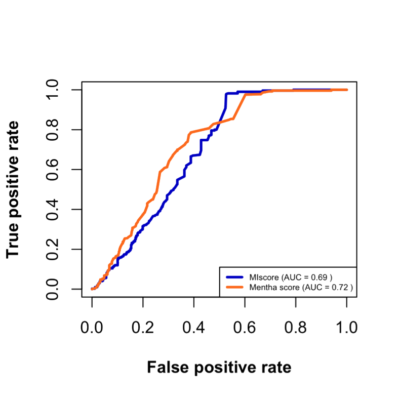

Integration and visualization of protein interactions
José M. Villaveces / Habermann Lab
Agenda
- Introduction
- Merging Molecular Interactions
- PSICQUIC
- Scoring Molecular Interactions
- MIscore
- Scores Comparison
- Visualization
- BioJS
- Live demo
“…every major process in a cell is carried out by assemblies of 10 or more protein molecules. And, as it carries out its biological functions, each of these protein assemblies interacts with several other large complexes of proteins. Indeed, the entire cell can be viewed as a factory that contains an elaborate network of interlocking assembly lines, each of which composed of a set of large protein machines.”
B. Alberts, Cell 92 (1998) 291-294.
Importance of molecular interactions
- Understand a protein function and behaviour.
- Predict the biological processes that a protein of unknown function is involved in.
- Characterise protein complexes and pathways.
Problems with protein interactions DBs
- Redundancy
- Same interaction is present in different DBs
- Diverse data sources
- How to integrate data form different resources?
- Quality assessment
- How can I assess interactions quality?
Goals
1. Unified Resource
2. Non Redundant
3. Quality Assessment
4. Visualization
1. Unified Resource
PSICQUIC
Proteomics Standard Initiative Common QUery InterfaCe- Standard to access and retrieve data from Molecular Interaction databases
- DBs implementing PSICQUIC are listed in a registry
- Based on the PSI standard formats (PSI-MI XML and MITAB)
Fetching interactions
- 31 different databases (~150 million interactions)
-
Interaction types
- Direct (physical)
- Indirect (functional)
- Prot2Prot
- Prot2Chem
- Automated process that detects changes in DB
Databases are redundant!
Merging Interactions
- Merge binary interactions providing non redundant information
- Includes mapping information between the data provider and the original data
3. Quality Assessment
Scoring algorithms
- Not reported in the scientific literature (except STRING)
- Depend on external data
- Orthology detection
- ‘Gold standard’ reference sets
Molecular Interactions score (MIscore)

- Estimates how well studied an interaction is
- Applicable to all DBs implementing PSICQUIC
- Formula Based on curators experience
Villaveces JM, et all. Merging and scoring molecular interactions utilising existing community standards: tools, use-cases and a case study Database 2015 (doi: 10.1093/database/bau131)
Scores Comparison
- Positive dataset:
- 500 random human interactions reported by three or more detection methods in MENTHA
- Negative dataset:
- 397 human interactions reported by the negatome database in MENTHA
Scores Comparison

- Comparable curves
- Matthews correlation coefficient (MCC)
- MIscore
- 0.485
- Mentha
- 0.343
Status
1’764,857 different molecules (proteins, chemicals).
23’912,268 different interactions.
2,665 organisms.
25 databases
4. Visualization
BioJS
“BioJS is a library of components that are easy to reuse, maintain and deploy on the web” BioJS Specification, 2011-12-13.
BioJS
- Open community (social coding)
- Open Source
- Web Based
- Focused on visualization
- BIOJS.NET

BioJS
PsicquicGraph
An open-source, web-based visualization component for molecular interactions from PSIQUIC services.
Villaveces JM, Jimenez RC and Habermann BH. PsicquicGraph, a BioJS component to visualize molecular interactions from PSICQUIC servers [v1; ref status: indexed, http://f1000r.es/2up] F1000Research 2014, 3:44 (doi: 10.12688/f1000research.3-44.v1)
KeggViewer
A component to visualize KEGG pathways and to allow their visual integration with functional data.
Villaveces JM, Jimenez RC and Habermann BH. KEGGViewer, a BioJS component to visualize KEGG Pathways [v1; ref status: indexed, http://f1000r.es/2uq] F1000Research 2014, 3:43 (doi: 10.12688/f1000research.3-43.v1)
ProteomeViewer
A component to explore UniProt proteomes